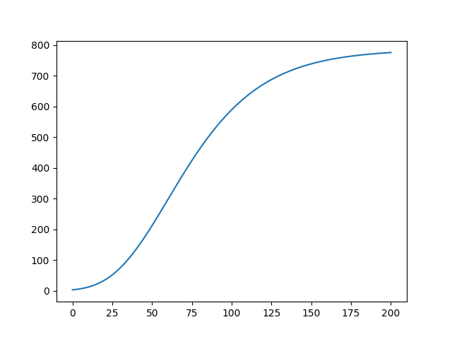
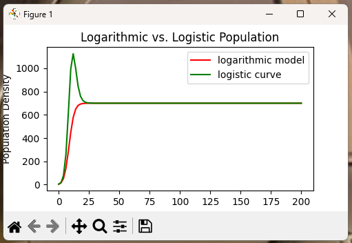

It is important to be able to visualize simulation results in many areas of engineering, science, economics and so on. In this module we will take on a problem with the goal of visualizing the output from our population density models from the previous module. In the module three separate models were defined.
The first was the Malthusian model that resulted in an exponential function for an exact solution. The second model was the logistic model that results in a rational function of exponential terms. The third model does not have an analytic solution. So, we need to be satisfied with an approximate solution.
In using these models, both the Logistic model and the logarithmic model have equilibrium solutions. The important of these are the carrying capacities for each of the population density models. Since the logarithmic model does not have an exact closed form solution, the best we can do is to compare the logarithmic model to the logistic model and compare the behavior near the equilibrium solutions.
We will use graphical comparisons. The easiest tool for this is to import the matplotlib packages written for use with python programs.
In the last module we considered the approximation of solutions of population density models. The differential equations used were approximated by finite difference equations when the derivative was replaed by the difference as follows: $$ \frac{dP}{dt} \approx \frac{P(t+\Delta t)-P(t)}{\Delta t} $$ This was used to develop formulas for computing the several different approximations. Our interest was in the logarithmic model and how the approximation compared with the logistic model.
The finite difference equation that resulted was $$ P(t+\Delta t) \approx P(t) + \alpha\ P(t) - \gamma\ \Delta t\ P(t) ln(P(t)) $$ which suggests the discrete sequence of approximations determined by $$ P_{k+1} = ( 1 + \alpha\ \Delta t ) P_k - \gamma\ \Delta t\ P_k\ \ln(P_k) $$ A basic code for implementing the algorithm above can be viewed at the following link:
Basic Code for the Logarithmic Model
This should provide a simple starting point. The output from the code is a graph shown in the next figiure.

Graphing a single data set is not too difficult. As seen in the code in the previous section, you need only do an import of matplotlib and add two plotting commands that are a part of the matplotlib package.
Note: The graph shown is a very simple plot. There are no labels, legends, or other identifying that could be added to the graphical interpretation of the simulations.
Another thing we could try is to graph the approximate solutions on the same figure. In this case, we would need to be careful to annotate the graphs with the particular approximation. This means labeling the graph and putting a legend in the figure for clarity.
The commands that are needed in order to annotate the graph are contained in the link below.
Code to Graph Multiple Approximations
The graph generated by the code is shown in the following figure.
The graph may need to be resized. This is an issue that can be resolved before saving the figure. Below is a screen capture of the window that pops up when the code is executed. The window has a tool bar* at the bottom that can be used to resize and a few other tricks.

Note In the graph shown the labels of the axes are cut off. By resizing the graph, the labels will show up again. You can use the tool bar to increase the size of the figure by just resizing the window.
Note The graph has a problem. When one looks at the curve for the logistic model, the approximation via a logistic model crosses the carrying capacity and then comes back down. This is not allowed in the differential equation. The simulation likely needs to be done with a smaller step, $dt$.
Note It also appears that the logarithmic model seems to do a better job approximating the expected behaviour of not crossing an equilibrium solution. It would be a good idea to compare the solutions in more cases before continuing on.
Under Construction
Results will appear later.
This is really comparing apples and oranges in some sense. We really cannot compare the solutions since the logarithmic model does not have a readily available exact solution. However, we can compare the approximate solutions in the case when the carrying capacities are the same.
We can find the carrying capacities by looking for nonzero equilibrium solutions for the model. These turn out to occur when $$ \frac{dP}{dt} = 0 $$ We do not need to consider the zero solutions since there really is no information that comes along with these two cases. Zero solutions are typically associated with unstable equilibria and for these models this is the cases.
For the logistic equation the carrying capacity comes from $$ 0=\alpha - \beta\ P \ \rightarrow\ P = \frac{\alpha}{\beta} $$ and for the logarithmic model we will use the same idea to create the equation $$ 0=\alpha-\gamma\ \ln(P)\rightarrow P=e^{\frac{\alpha}{\gamma}} $$ To obtain a match we can just set these values equal to each other. That is, $$ e^{\frac{\alpha}{\gamma}} = \frac{\alpha}{\beta} $$ We will assume the growth rate parameter, $\alpha>0$, is the same for both models.
The assumptions give relationships between the parameters, $\beta$ and $\gamma$ as follows. $$ \gamma = \frac{\alpha}{\ln(\alpha)-\ln(\beta)} $$ and $$ \beta = \alpha\ e^{-\frac{\alpha}{\gamma}} $$ If the two models have the same carrying capacity the solutions must eventually approach the same result as $t$, the time, gets large enough.
Note: It is typical to assume that $\alpha>\beta$ in the logistic model which also implies that $\gamma>0$ in the first relationship above. If there is a large difference between $\alpha$ and $\beta$ in the logistic model, $\gamma$, may be very small.
Let's define an example that illustrates the difference between the logistic and logarithmic models. Set $\alpha=0.2$ and $\beta=0.003$. This implies $\gamma\approx 0.047622392$.
The graphcs of the two models are shown in the next figure.

The main task in this module is to produce graphics that can be used to describe what is going on with the simulations of population density that were developed in the previous module.
Use the following parameters. You will need to compute $\gamma$ from $\alpha$ and $\beta$. $$ \alpha = 0.593, \ \ \ \ \beta = 0.001086 $$ Show your calculations.